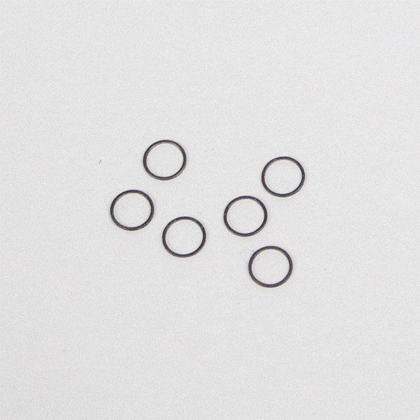

RailCore Labs
›
RailCore Build Guides
›
Parts & tools
5mm Shim

Used in
RailCore II: J) X/Y Steppers and Idlers
RailCore® Mini Kit: I) Y Rail Installation
RailCore® Mini Kit: J) X/Y Steppers and Idlers